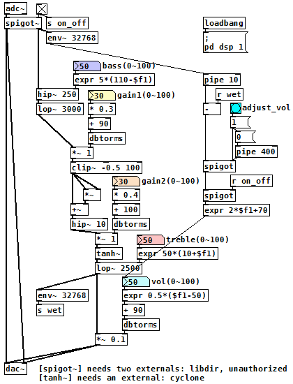

オーバードライブ（Pure Data パッチ）
2018年01月19日 カテゴリー：Pure Data
デジタルの歪みはなかなか自然な感じにするのが難しく、自分なりにいろいろと検討しました。詳細は前回の記事（真空管風デジタル歪み）をご覧ください。
（このパッチをダウンロード）
gain1では二次関数 f(x) = x2 + x を使い、波形を非対称に変形させて浅い歪みを調整します。ただそのままでは x < -0.5 のとき波形が折りたたまれる形になるため、[clip~ -0.5 100]を入れてそれを防いでいます。gain2は[tanh~]を使った対称ソフトクリップで、深い歪みを調整します。
個人的に便利かなと思い組み込んだのが、右側に配置している音量調節機能です。弾きながらadjust_vol（フットスイッチを想定）を押すと、エフェクト音の音量が原音と同じになるように変更されます。原理は簡単で、原音とエフェクト音それぞれに繋がっている[env~ 32768]（左上と左下のあたりに配置）から出力される値の差を計算するだけです。
トーン調整についてはとりあえず単純なハイパスフィルターとローパスフィルターにしていますが、私の感覚には結構合っている調整方法のようです。デジタルなので内容の変更や追加は簡単にできます。気が向いたらクリーンミックスやフェンダー型トーン回路等いろいろ試してみたいと思います。